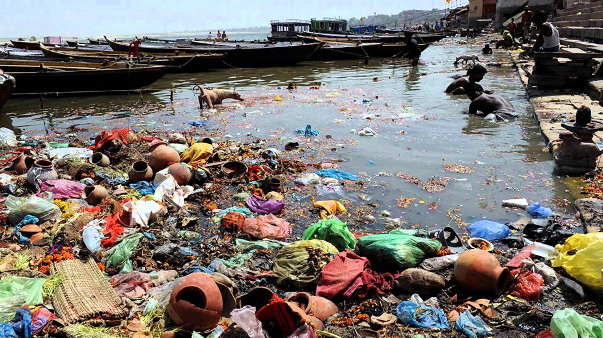

What is Water Pollution?
Water pollution occurs when harmful substances contaminate rivers, lakes, oceans, and
groundwater. These pollutants affect aquatic ecosystems, harm marine life, and pose serious
risks to human health. Sources of water pollution can be natural or human-made, such as
industrial discharges, agricultural runoff, and plastic waste. The damage caused by water
pollution is long-lasting and often difficult to reverse, impacting biodiversity, drinking
water supplies, and food chains.
|

|